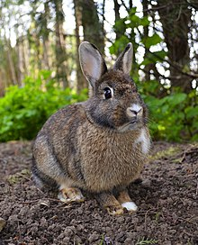

Rabbits are small mammals in the family Leporidae (which also includes the hares), which is in the order Lagomorpha (which also includes pikas). The European rabbit, Oryctolagus cuniculus is the ancestor of the world's hundreds of breeds of domestic rabbit. Sylvilagus includes 13 wild rabbit species, among them the seven types of cottontail. The European rabbit, which has been introduced on every continent except Antarctica, is familiar throughout the world as a wild prey animal, a domesticated form of livestock and a pet. With its widespread effect on ecologies and cultures, in many areas of the world, the rabbit is a part of daily life as food, clothing, a companion, and a source of artistic inspiration.
